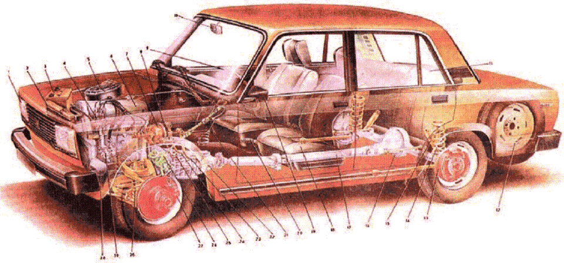

ВАЗ-2105 («Жигули», LADA 2105) — советский и российский автомобиль малого класса, выпускавшийся
Волжским автомобильным заводом (ВАЗ) с 1980 по 2010 год. Второе поколение заводской «классики»,
глубоко модернизированная первая модель.
История
Работы по обновлению первой модели автозавода начались вскоре после запуска её в производство.
Предполагалось, что уже в 1975 году новый автомобиль пойдёт в серию, модель так и обозначалась —
«автомобиль 2101 1975 года». И только впоследствии ей был присвоен индекс 2105.
Сначала пытались провести модернизацию простейшим способом: путём замены фар, облицовки
радиатора, бамперов, добавления декоративных элементов. Было сделано несколько вариантов, но ни
один из них не устраивал разработчиков: изменения не делали автомобиль новым. И только когда
проектная команда получила «добро» на замену дверей, образ автомобиля стал вырисовываться.
Были предложения и от иностранных партнёров. Так, представители Fiat хотели разработать новый
заднеприводный автомобиль, базирующийся на выпускавшихся агрегатах. Но на автозаводе уже вовсю
работали над передним приводом, и от этого проекта отказались. Специалисты Porsche показали
свой вариант модернизации внешнего вида и интерьера. В конечном итоге предпочтение отдали
созданной на заводе конструкции, в 1976 году технический совет утвердил концепцию автомобиля и
вариант внешнего вида, предложенный дизайнером Владимиром Эрастовичем Степновым.
Помимо кузова, ВАЗ-2105 получил существенно обновлённый интерьер и новый, специально для него
разработанный двигатель. В электрооборудовании и ходовой части автомобиля также были проведены
многочисленные изменения.
Первый образец был собран в декабре 1977 года. В марте следующего года была изготовлена первая
серия опытных автомобилей, которые отправились на испытания. В конце 1979 года началось
освоение сборки на конвейере, и 3 января 1980 года был выпущен первый серийный
автомобиль.
ВАЗ-2105 неоднократно модернизировался за долгие годы производства. Так, в 1994 году он лишился
базового двигателя. Зато в 2005 году получил моторы со впрыском топлива, отвечающие новым
экологическим требованиям, что позволило продлить конвейерную жизнь автомобиля. В последние
годы производства модель всё больше становилась похожей на «семёрку», на неё стали устанавливать
передние сиденья и бамперы от ВАЗ-2107. Учитывая небольшую разницу в цене, покупатели
предпочитали именно люксовую модель, и спрос на «пятёрку» стал стремительно падать.
Последний ВАЗ-2105 цвета мускари (синий) сошёл с конвейера 30 декабря 2010 года и был
отправлен в дилерскую сеть. Всего был изготовлен 2 090 741 автомобиль.
Конструкция
Кузов и оборудование
Созданный на базе предыдущей модели кузов сохранил от ВАЗ-2101 каркас с полом, крышей и щитком
предка. Все стёкла, кроме передних боковых, также остались старыми, но, за счёт новых
боковин и крыльев, дверей, капота и крышки багажника, а также фар, задних фонарей и облицовок
автомобилю был придан новый оригинальный вид.
Серьёзно была обновлена «пятёрка» и внутри. Передняя панель, безопасный руль, сиденья с
подголовниками, цельноформованная обивка потолка и дверей, наружные зеркала, регулируемые из
салона — всё это стало новым. Отказ от форточек заставил серьёзно пересмотреть систему
вентиляции и отопления.
Множество деталей и узлов было совершенно новым для отечественного автостроения. Так, много
проблем вызвали алюминиевые бампера, сиденья с пенополиуретановым наполнением,
стеклоподъёмники больших, лишённых форточек передних стёкол. Конструкция дверей далась нелегко:
петли, замки, ограничители пришлось разрабатывать заново и тщательно доводить до
совершенства.
Блок-фары, в которых объединены ближний и дальний свет, габаритные огни и указатели поворота,
также были новинкой отечественного автопрома. Гидрокорректор фар позволял менять их положение, в
зависимости от загрузки автомобиля, дистанционно, прямо из салона. Часть автомобилей
комплектовалась омывателями и очистителями стёкол фар.
Двигатели и трансмиссия
Автомобили всех версий комплектовались рядными четырёхцилиндровыми двигателями, установленными
спереди продольно.
На базовый автомобиль устанавливался специально для него разработанный двигатель 2105 рабочим
объёмом 1,3 литра. В нём впервые в истории отечественного автопрома привод верхнего распредвала
(SOHC) осуществлялся с помощью зубчатого ремня. Такая конструкция обеспечивала более плавную,
без рывков, работу и позволила снизить массу двигателя и его шумность. Более простая версия
автомобиля комплектовалась проверенным двигателем 2101 рабочим объёмом 1,2 литра с цепным
приводом верхнего распредвала. Улучшенная, более дорогая версия оборудовалась мощным двигателем
2103 рабочим объёмом 1,5 литра, также с цепным приводом распределительного вала. Все моторы
питались от карбюратора, имели жидкостное охлаждение и центральную систему смазки под давлением.

Двигатели агрегатировались с четырёх- или пятиступенчатыми механическими коробками передач. С
1987 года на всех автомобилях классического семейства коробки передач были унифицированы по
передаточным числам и отличались только второстепенными деталями. От коробки вращение назад
передавалось с помощью карданной передачи с двумя шарнирами и далее на колёса через главную
передачу, дифференциал и полуоси заднего моста.
Начиная с 2005 года, на автомобиль стали устанавливать новый двигатель 2104. Созданный на
базе мотора 2103, он имел систему распределённого впрыска топлива, электронную систему
управления, каталитический нейтрализатор и множество других изменений, направленных на
выполнение требований экологического стандарта Евро-2. В конце 2007 года был добавлен самый
большой двигатель семейства - 1,6-литровый 21067. Этот созданный на базе мотора 2106
двигатель также был оборудован впрыском топлива и отвечал уже стандарту Евро-3.
В небольших количествах изготавливались автомобили, оснащённые дизельным двигателем. Мотор 341
был создан на базе усиленного блока 2103 с использованием деталей от других уже выпускаемых
двигателей. Головка цилиндров была новой, с размещённой в ней камерой сгорания (так называемый,
предкамерный дизель). Для облегчения холодного пуска в камерах сгорания располагались свечи,
подогревающие горючую смесь. Использовалась топливная аппаратура фирмы Bosch, двигатель
комплектовался увеличенной мощности стартером, что потребовало использование большей ёмкости
аккумулятора. Помимо прочего, на двигатель устанавливался вакуумный насос для обеспечения работы
усилителя тормозов.
Мелкими сериями по заказам спецслужб выпускался автомобиль, оборудованный роторно-поршневым
двигателем (РПД). Этот двухсекционный РПД питался от карбюратора, был оборудован электронной
цифровой системой зажигания и специальной системой смазки с дополнительным радиатором.
Ходовая Часть
Подвеска передних и задних колёс всех автомобилей ВАЗ классической компоновки была
унифицирована, то есть имела одну и ту же конструкцию. Спереди — независимая пружинная на
двойных поперечных рычагах с телескопическими амортизаторами и стабилизатором поперечной
устойчивости. Сзади — жёсткий мост, также на пружинах, с четырьмя продольными рычагами и
поперечной тягой Панара.
Рулевое управление — без усилителя, с глобоидным червяком, двухгребневым роликом и
травмобезопасной складывающейся рулевой колонкой. За счёт применения в рулевом механизме
шариковых подшипников удалось примерно на треть снизить усилие на руле.
Привод тормозов — гидравлический двухконтурный с усилителем и регулятором давления задних
тормозов. Спереди установлены дисковые тормоза со сплошными (не вентилируемыми) дисками и
неподвижным суппортом. Задние барабанные тормоза с самоустанавливающимися колодками имели
встроенный в колёсный цилиндр механизм автоматической регулировки зазора между колодками и
барабаном.
На автомобиль устанавливались новые колёса без колпаков и специально для этой модели
разработанные шины.
Модификации
ВАЗ-2105 — базовая модель с двигателем ВАЗ-2105 рабочим объёмом 1,3 литра.
ВАЗ-21051 — упрощённая версия с двигателем ВАЗ-2101 рабочим объёмом 1,2 литра.
ВАЗ-21053 — улучшенная версия с более мощным двигателем ВАЗ-2103 рабочим объёмом 1,5 литра.
ВАЗ-21053-20 — версия с двигателем 2104 рабочим объёмом 1,5 литра, оснащённым системой впрыска
топлива.
ВАЗ-21054 — мелкосерийная версия для спецслужб с двигателем ВАЗ-2106 рабочим объёмом 1,6 литра,
которая комплектовалась дополнительным бензобаком и вторым аккумулятором.
ВАЗ-21054-30 — версия с двигателем 21067 рабочим объёмом 1,6 литра, оснащённым системой впрыска
топлива.
ВАЗ-21055 — мелкосерийная версия с дизельным двигателем ВАЗ-341.
ВАЗ-21056 — версия базовой модели ВАЗ-2105 с правым расположением руля.
ВАЗ-21057 — версия модели ВАЗ-21053 с двигателем 1,5 литра и правым расположением руля.
ВАЗ-21058 — версия модели ВАЗ-21051 с двигателем 1,2 литра и правым расположением руля.
ВАЗ-21059 — мелкосерийная версия с роторно-поршневым двигателем ВАЗ-4132.
Модель
Модель я взял у Пользователя Мэтью0451
У него ещё много таких крутых моделей и я их использую для сайта. Спасибо Мэтью0451!